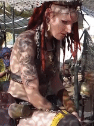
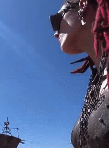

|  |
people love to wax poetic about the safety of the old world, as though it were ever anything other than a flimsy facade. i remember a time when the lights were still on. when there were hot showers, even broadcast television, but safety isn't something i've ever known. my earliest memories are full of war and death. nothing has ever been safe. those who believe otherwise are delusional.
as the danger of the chedaki dwindled, the danger of the infected became more dire. the hordes grew in size and number, leaving nowhere to hide as they ravaged the countryside. those who failed to adapt died like flies.
for most, the outbreak's spread was a curse, but to me it came to mean freedom. the girl who'd spent her youth hiding from the threat of the chedaki made way for the woman who would embrace the chaos that chernarus had become.
|
 |